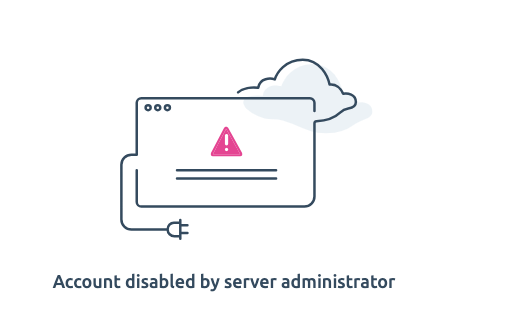

# Quarto install
quarto -v 1.4.489System administration and machine set-up is often a hurdle. This page briefly documents my experience in setting up a usable working environment on a Mac laptop. For production purposes one might streamline this to a similar Docker image or similar.
A single environment was not possible
bacterial-genomics-tutorial-sw7 is the most complete and is used
A binary install of SPAdes was needed
pilon download
# use clean install of conda on machine in private space
source ~/anaconda3/etc/profile.d/conda.sh
conda -V
# e.g. add a channel
# conda config --add channels bioconda
conda config --show channels
conda env listconda 24.1.2
channels:
- conda-forge
- bioconda
- defaults
# conda environments:
#
base * /Users/sw/anaconda3
bacterial-genomics-tutorial-sw1 /Users/sw/anaconda3/envs/bacterial-genomics-tutorial-sw1
bacterial-genomics-tutorial-sw2 /Users/sw/anaconda3/envs/bacterial-genomics-tutorial-sw2
bacterial-genomics-tutorial-sw3 /Users/sw/anaconda3/envs/bacterial-genomics-tutorial-sw3
bacterial-genomics-tutorial-sw4 /Users/sw/anaconda3/envs/bacterial-genomics-tutorial-sw4
bacterial-genomics-tutorial-sw5 /Users/sw/anaconda3/envs/bacterial-genomics-tutorial-sw5
bacterial-genomics-tutorial-sw7 /Users/sw/anaconda3/envs/bacterial-genomics-tutorial-sw7
example /Users/sw/anaconda3/envs/example
for_drep /Users/sw/anaconda3/envs/for_drep
just_quast /Users/sw/anaconda3/envs/just_quastReference commands and setup notes
# This code is not executed in page rendering
# e.g. create an env
conda create --name example
conda activate example
conda install jupyterlab
conda list | grep jupyter
# run for example jupyterlab
jupyter-lab
conda deactivate
# envs
conda env create -f environment.yaml
# Found conflicts! Looking for incompatible packages.
# now a series of reduced env for testing and debugging
conda env create -f envs_yaml/environment_sw1.yaml
conda env create -f envs_yaml/environment_sw2.yaml
conda env create -f envs_yaml/environment_sw4.yaml
conda env create -f envs_yaml/environment_sw3.yaml
conda env create -f envs_yaml/environment_sw5.yaml
# Adding 'quast' causes issues
# ... Solving environment: failed with ..
conda env create -f envs_yaml/environment_sw6.yaml
# Now a spades issue,
# https://github.com/ablab/spades/issues/8732
# see url above
# try specify a version
# first search
conda search spades
# i specify the latest version as 3.15.2
conda env create -f envs_yaml/environment_sw7.yaml
# and now we need fastani
conda env create -f envs_yaml/environment_sw8.yaml
# Solving environment: | warning libmamba Problem type not implemented SOLVER_RULE_STRICT_REPO_PRIORITY
# LibMambaUnsatisfiableError: Encountered problems while solving:
# - package roary-3.7.0-0 requires perl-bioperl-core <1.7, but none of the providers can be installed
# and note,
#############################################################################################
# #
# Note: SPAdes installed through bioconda on MacOS may be somewhat slower than the SPAdes #
# binaries distributed by the authors at #
# #
# http://cab.spbu.ru/files/release3.15.2/SPAdes-3.15.2-Darwin.tar.gz
# #
# due to unavailability of parallel libstdc++ for the Clang compiler used by bioconda on #
# MacOS; see https://github.com/ablab/spades/issues/194#issuecomment-523175204 #
# #
#############################################################################################
# binary is not available
# also, the whole domain content http://cab.spbu.ru/ is unavailable
# in any case, spades 3.15.2 doesn't work
# same error,
in construct_mapping
if not isinstance(key, collections.Hashable):
AttributeError: module 'collections' has no attribute 'Hashable'
# The fix is included into the latest SPAdes 3.15.4 release
# conda just has up to 3.15.2 !!!
# try
conda config --add channels defaults
conda config --add channels bioconda
conda config --add channels conda-forge
conda config --set channel_priority strict
# commands change the order to
channels:
- conda-forge
- bioconda
- defaults
conda search spades
# 3.15.2 is latest, channels inc bioconda
conda config --show channels
# and URLs
conda config --show default_channels
# but not for bioconda
# it's a mystery why versions > 3.15.2 can not be seen by
conda search spades
# clearly they exist
# https://bioconda.github.io/recipes/spades/README.html#package-spades
conda update spades
# All requested packages already installed.
conda list | grep spades
# spades 3.15.2 he641558_0 bioconda
# seems like I would need to setup mamba to get a working spades?
https://bioconda.github.io/recipes/spades/README.html
# get binaries from github, a viable option?
https://github.com/ablab/spades?tab=readme-ov-file#sec2.2
# installed in home (~)
wget https://github.com/ablab/spades/releases/download/v3.15.5/SPAdes-3.15.5-Darwin.tar.gz
tar -zxf SPAdes-3.15.5-Darwin.tar.gz
cd SPAdes-3.15.5-Darwin/bin/
# This seemed to work
### additional commands
# to remove an environment e.g.
conda remove --name bacterial-genomics-tutorial-sw1-sw1 --all
conda infoconda create --name just_quast
conda activate just_quast
conda install quast
# has lots of dependancies and gives final messages
Downloading and Extracting Packages:
Preparing transaction: done
Verifying transaction: done
Executing transaction: | The default QUAST package does not include:
* GRIDSS (needed for structural variants detection)
* SILVA 16S rRNA database (needed for reference genome detection in metagenomic datasets)
* BUSCO tools and databases (needed for searching BUSCO genes) -- works in Linux only!
To be able to use those, please run
quast-download-gridss
quast-download-silva
quast-download-busco
--------------------
with Downloading BUSCO database...
Downloading bacteria database (file: bacteria.tar.gz)...
ERROR! Failed downloading bacteria database (url: https://busco-archive.ezlab.org/v3/datasets/bacteria_odb9.tar.gz), QUAST functionality will be limited! Exception caught: HTTP Error 404: Not Found
You can try to download the file manually, place it in /Users/sw/anaconda3/envs/just_quast/lib/python3.10/site-packages/quast_libs/busco/bacteria.tar.gz and restart QUAST
WARNING: Failed to download bacteria database from https://busco-archive.ezlab.org/v3/datasets/bacteria_odb9.tar.gz and unpack it into /Users/sw/anaconda3/envs/just_quast/lib/python3.10/site-packages/quast_libs/busco
Downloading BUSCO database...
Downloading eukaryota database (file: eukaryota.tar.gz)...
ERROR! Failed downloading eukaryota database (url: https://busco-archive.ezlab.org/v3/datasets/eukaryota_odb9.tar.gz), QUAST functionality will be limited! Exception caught: HTTP Error 404: Not Found
You can try to download the file manually, place it in /Users/sw/anaconda3/envs/just_quast/lib/python3.10/site-packages/quast_libs/busco/eukaryota.tar.gz and restart QUAST
WARNING: Failed to download eukaryota database from https://busco-archive.ezlab.org/v3/datasets/eukaryota_odb9.tar.gz and unpack it into /Users/sw/anaconda3/envs/just_quast/lib/python3.10/site-packages/quast_libs/busco
Downloading BUSCO database...
Downloading fungi database (file: fungi.tar.gz)...
ERROR! Failed downloading fungi database (url: https://busco-archive.ezlab.org/v3/datasets/fungi_odb9.tar.gz), QUAST functionality will be limited! Exception caught: HTTP Error 404: Not Found
You can try to download the file manually, place it in /Users/sw/anaconda3/envs/just_quast/lib/python3.10/site-packages/quast_libs/busco/fungi.tar.gz and restart QUAST
WARNING: Failed to download fungi database from https://busco-archive.ezlab.org/v3/datasets/fungi_odb9.tar.gz and unpack it into /Users/sw/anaconda3/envs/just_quast/lib/python3.10/site-packages/quast_libs/buscocreate special environment for dRep because not possible to add fastani to bacterial-genomics-tutorial-sw7
# need pilon
# quick and dirty way
# TODO: paranmeterise and check for latest version
mkdir apps
cd apps
if [ -f pilon-1.24.jar ]; then
echo 'pilon-1.24.jar file exists.'
else
echo 'Getting pilon jar file: '
wget https://github.com/broadinstitute/pilon/releases/download/v1.24/pilon-1.24.jar
fi
# then symbolic link the latest version to pilon.jar
echo 'Directory listing: '
ls -l
cd ..mkdir: apps: File exists
pilon-1.24.jar file exists.
Directory listing:
total 35992
-rw-r--r-- 1 sw staff 7387440 Dec 8 2021 pilon-1.23.jar
-rw-r--r-- 1 sw staff 11034933 Dec 8 2021 pilon-1.24.jar
lrwxr-xr-x 1 sw staff 14 Feb 25 14:27 pilon.jar -> pilon-1.24.jar